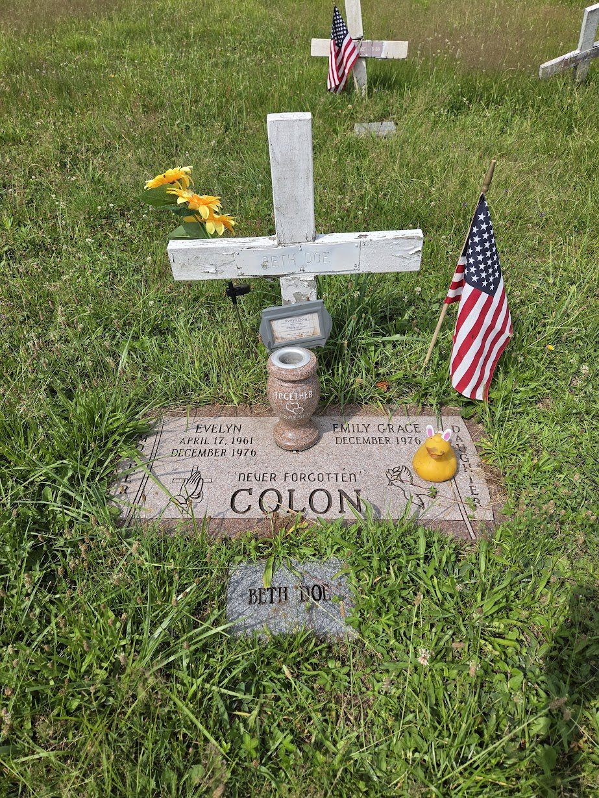
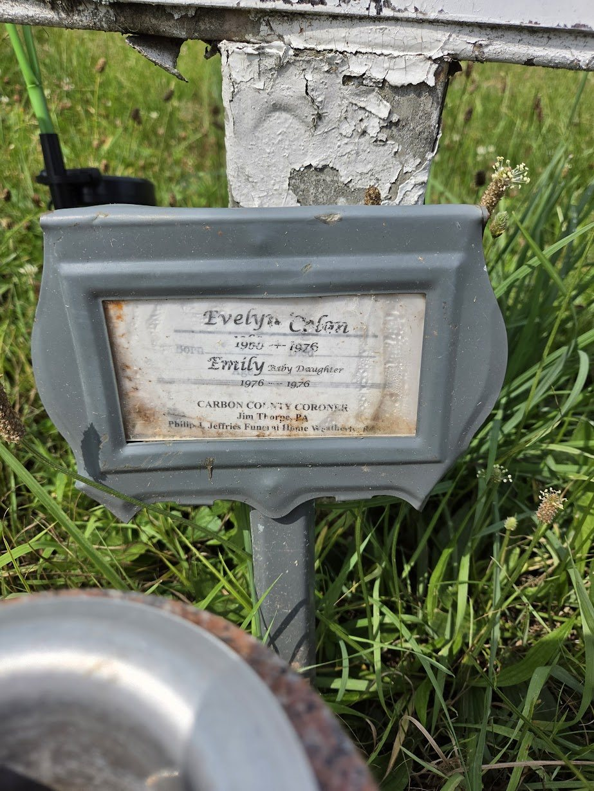
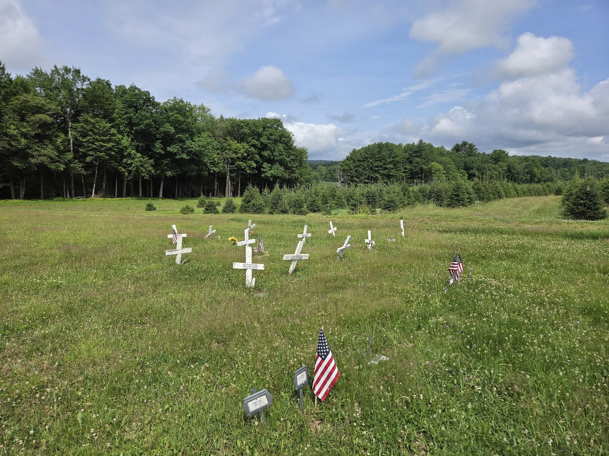
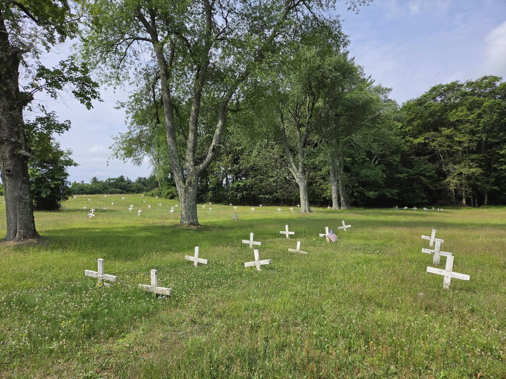
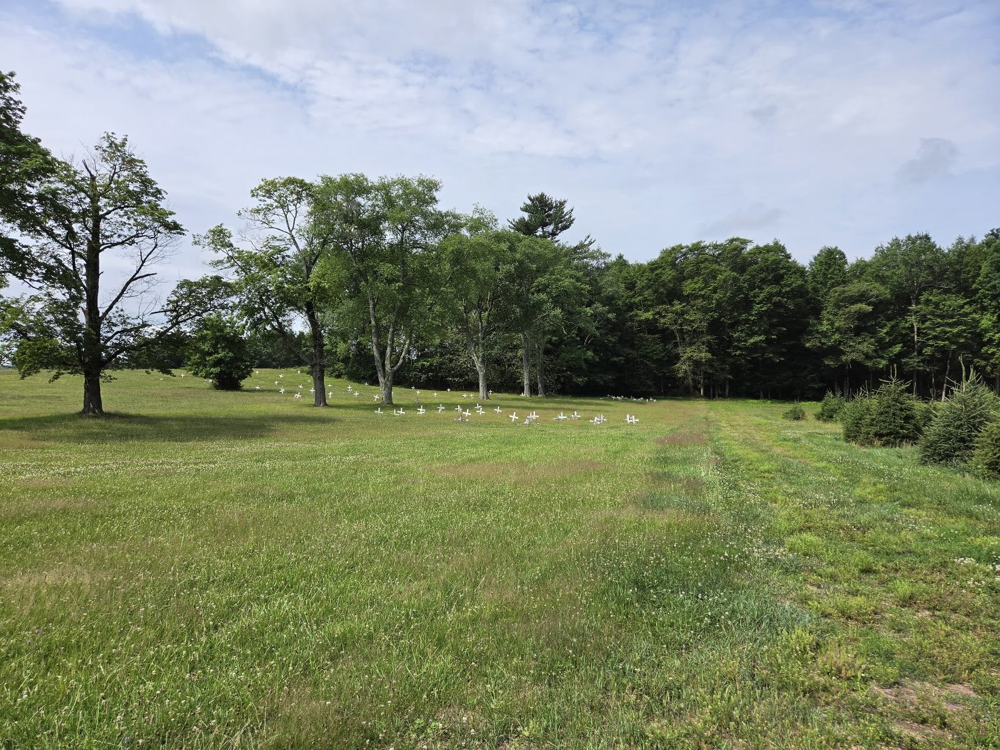
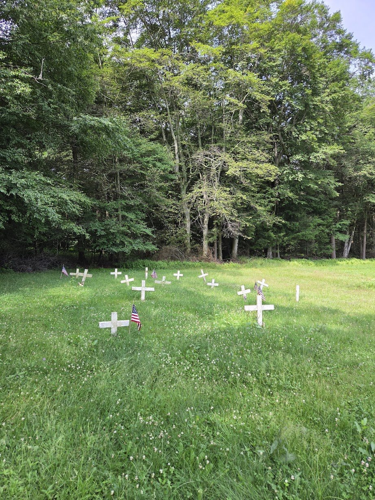
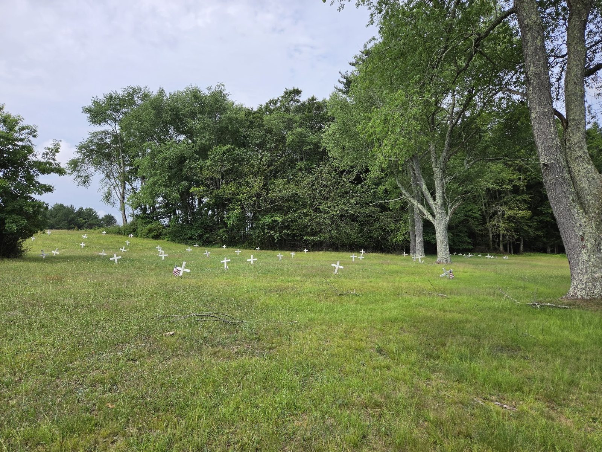

Evelyn Before “Beth Doe”
Her name was Evelyn Colon. Born on April 17, 1961, she was from Jersey City, New Jersey, though the cited public record does not establish her birthplace. She was one of five children in a Puerto Rican family. By late 1976, she was fifteen, pregnant, and living in a Jersey City apartment with her nineteen-year-old boyfriend, Luis Sierra, whom family accounts and charging records identified as the baby’s father. The Colon and Sierra families knew one another, and Evelyn’s brother later testified that he and Sierra had grown up next door to each other.313
Shortly before she disappeared, Evelyn called her mother, said she felt unwell, and asked for soup. Accounts differ on which relative then went to the apartment; the consistent point is that the apartment was empty and neighbors said the couple had moved. In January 1977, the family received a letter postmarked in Stamford, Connecticut. It said Evelyn had given birth to a boy, was doing well, and would make contact if she needed anything. Believing the letter, the family did not report her missing at the time.313
Years later, relatives said an attempt to file a missing-person report was unsuccessful because the letter suggested Evelyn had left voluntarily. Her brother testified that their mother died believing Evelyn had chosen to cut off contact. Both parents died before investigators restored Evelyn’s name in 2021.313
Family statements are not court findings
Relatives told investigators that Evelyn feared Sierra and had warned her mother about him. Those statements formed part of the prosecution’s evidence, but the charge was dismissed before trial and the allegations were never adjudicated.113
The Discovery
On December 20, 1976, fourteen-year-old Kenneth Jumper Jr. was checking animal traps near the Lehigh River in East Side Borough, Carbon County. Beneath an Interstate 80 bridge, he found human remains and alerted his family, who contacted police. Investigators recovered the dismembered remains of a young woman and a near-full-term female fetus from the riverbank and nearby woods.412
The remains had been placed in three vinyl suitcases. Some of the suitcases had opened after falling from the bridge. Investigators also recovered a reddish-orange chenille bedspread, straw or hay, and newspaper used as wrapping. Othram’s case history identifies the paper as six sections of the September 26, 1976, New York Sunday News. These objects became part of a long effort to determine where the unidentified victim had lived and who she was.412
What the Autopsy Found
The autopsy documented sexual assault, manual strangulation, a postmortem gunshot wound to the neck, and dismemberment. The official cause of death was strangulation and the manner of death was homicide. The fetus was female, with an estimated gestational age of eight to nine months.4
The December 23, 1976, autopsy was performed by Dr. Halbert E. Fillinger Jr. of the Philadelphia Medical Examiner’s Office—not “Herbert Filinger,” as some retellings have repeated. Examiners initially estimated that the victim was in her late teens or early twenties. Investigators believed she had died shortly before discovery; published accounts give a broader estimated window of December 13–19, 1976. December 19 should therefore be treated as an investigative estimate, not a certain date of death.412
Investigators recorded dark, shoulder-length hair, dental work and decay, a scar above one heel, and two facial moles. They circulated or compared those details, fingerprints, dental records, and facial reconstructions in repeated efforts to identify her. Later, DNA work provided another path.12
Writing on her left palm
The examination recorded the letters “WSR” followed by several ambiguous numerals written in ink. No cited public source establishes what the notation meant.4
The Unidentified Years
Her fingerprints produced no identification, and missing-person comparisons failed to identify her. In early records, she was called “Ms. X”; “Beth Doe” became the name used publicly as the case continued. The National Center for Missing & Exploited Children later produced facial reconstructions and publicized the case in an effort to reach someone who recognized her.1112
Different forensic methods produced different kinds of estimates, and later summaries sometimes blurred them together. Anthropological assessments addressed possible ancestry, while isotope studies tried to infer where she had lived from chemical signatures in hair, teeth, and bone. Published interpretations suggested Mediterranean or Italian ancestry and pointed investigators toward Central Europe and parts of the southeastern United States. Those geographic interpretations did not point to Jersey City and proved misleading in this case; the ancestry estimate, however, is not inherently inconsistent with Puerto Rican heritage.11
Investigators excluded multiple missing women over the years. In 2019, they explored whether “Beth Doe” might be Madeline “Maggie” Cruz, then ruled out that theory after Cruz was found alive. Public attention, volunteer advocacy, and the 2015 NCMEC reconstruction kept the case visible until DNA technology offered another path.11
Giving Her Name Back
Investigators repeatedly returned to the case as forensic methods improved. In November 2020, DNA Labs International produced an extract from preserved evidence, and the Pennsylvania State Police, Carbon County Coroner’s Office, and NCMEC engaged Othram to pursue forensic genealogy. Othram developed a genealogical profile and searched genealogy data made available for law-enforcement use.4
The strongest match was Evelyn’s nephew, Luis Colon Jr. Othram reports that he shared about 1,700 centimorgans with the unidentified victim and that results were returned to NCMEC in February 2021. Investigators then confirmed that “Beth Doe” was Evelyn Colon. The identification and homicide charge became public on March 31, 2021; the Pennsylvania State Police held a public briefing on April 14.14
“I wanted to find her but not find her deceased.”
Luis Colon Jr., Evelyn’s nephew3
The 2021 Homicide Charge
When authorities publicly identified Evelyn in 2021, they also announced that Luis Sierra, her nineteen-year-old boyfriend in 1976, had been arrested and charged with homicide. The prosecution cited family statements describing alleged abuse and Evelyn’s reported fear of him, along with statements investigators attributed to Sierra. Because the case did not go to trial, these allegations were never tested or established as proof of guilt.12
The 2024 court opinion says investigators questioned Sierra for about four hours in March 2021. It records that he initially said he did not know Evelyn, later recalled her when investigators explained that the questions concerned events in 1976, and described returning to an empty apartment and assuming she had gone to her mother. Sierra maintained his innocence and later alleged that police coerced a false confession.2
Published accounts conflict about Sierra’s response when asked about the 1977 letter. Preliminary-hearing reporting said he might have written it, while later reporting described an admission; other early accounts said he denied sending it. The original letter was no longer available for testing, and its authorship was never resolved in court. After a preliminary hearing, the charge was sent to county court, but the case ended before trial.91013
The Defense’s Alternative Theory
At the April 2021 preliminary hearing, Sierra’s defense argued that investigators should consider Richard Cottingham, the serial killer known as the “Torso Killer,” who was active in northern New Jersey and New York during the same era. The defense pointed to broad similarities involving dismemberment and geographic proximity.713
Richard Cottingham
Authorities have linked Cottingham to numerous killings. The New Jersey State Police reported that he confessed in 2021 to the 1974 killings of teenagers Mary Ann Pryor and Lorraine Kelly. No public forensic or testimonial evidence cited for this page links him to Evelyn’s death, and he has not been charged in her case.14
The preliminary-hearing judge found enough evidence to send the charge against Sierra to county court. That ruling did not determine guilt, and no trial occurred to test the defense theory.27
Why the Pennsylvania Charge Was Dismissed
Sierra was extradited to Pennsylvania and initially held without bail. In 2022, a court set bail at $250,000 and he was released while the charge remained pending. He has maintained his innocence. No one has been convicted in Evelyn’s death.2
In 2024, a former Carbon County cellmate alleged that Sierra had made incriminating statements. For the limited purpose of deciding the defense motion, both sides agreed to treat the killing alleged by the prosecution as having occurred at the couple’s Jersey City apartment. That agreement rebutted Pennsylvania’s statutory presumption that a homicide occurred where the body was found.2
On September 25, 2024, the Carbon County Court of Common Pleas dismissed the Pennsylvania homicide charge for lack of subject-matter jurisdiction. It also held that it had no authority to transfer the case. The court did not decide Sierra’s guilt or affirmatively determine that New Jersey has jurisdiction. It stated that nothing in the ruling prevented an appropriate jurisdiction from prosecuting if its authorities chose to proceed. The district attorney publicly confirmed the dismissal in 2025.26
A review of public sources found no reported New Jersey charge as of July 13, 2026. That absence does not establish the status of any nonpublic investigation. The narrow, documented conclusion is that the Pennsylvania case ended without a trial and Evelyn’s homicide remains unresolved.
Timeline of the Case
- Evelyn Colon is born. Her family is later documented in Jersey City; the cited records do not establish her birthplace.
- Estimated death window. Evelyn is fifteen and eight to nine months pregnant.
- The remains are found near the Lehigh River by fourteen-year-old Kenneth Jumper Jr.
- The autopsy rules the death a homicide by strangulation. She is first recorded as “Ms. X” and later becomes publicly known as “Beth Doe.”
- A letter arrives postmarked in Stamford, Connecticut, claiming Evelyn had given birth to a boy and was well.
- Burial. Their remains, held and preserved at the Philadelphia morgue, are interred together in Carbon County’s potter’s field.
- Exhumation and reburial. The remains are examined and sampled for DNA, then reinterred in a vault.
- A new facial reconstruction is released by NCMEC.
- A false lead involving Madeline “Maggie” Cruz is ruled out when Cruz is found alive.
- Advanced DNA work begins. A new extract is sent for forensic genealogy.
- Othram reports a strong match to Evelyn’s nephew, Luis Colon Jr.
- Her identity and a homicide charge are made public. The Pennsylvania State Police hold a public briefing about the case on April 14.
- Sierra is released on $250,000 bail while the Pennsylvania charge remains pending.
- The Pennsylvania charge is dismissed for lack of subject-matter jurisdiction.
- A review of public sources finds no reported New Jersey charge. The homicide remains unresolved.
Burial and Memorial
Long before investigators restored her name, Evelyn’s remains and those of her daughter were held and preserved at the Philadelphia morgue from 1976 until 1983. On August 18, 1983, they were interred together under the “Beth Doe” identity in Carbon County’s potter’s field on Laurytown Road in Lehigh Township, near Weatherly. Contemporary and retrospective reporting describes a wooden casket without a burial vault.612
The cemetery is also known locally as the “Poor Farm.” Unidentified burials there were marked with simple white crosses. Their grave was marked this way until the family added a stone bearing Evelyn’s and Emily Grace’s names.812
On October 30, 2007, the remains were exhumed so investigators could collect biological samples for DNA testing. A second examination took place at Warren Hospital in Phillipsburg, New Jersey. On November 1, the remains were reinterred in a sealed metal case and concrete vault; six Pennsylvania state troopers served as pallbearers.12
After Evelyn was identified, her family named her daughter Emily Grace and raised funds for relatives to travel to Pennsylvania and for a family marker. Evelyn and Emily Grace remain buried together.5
In 2021, reporting after the identification described flowers and small memorial objects at the grave. The family thanked the Carbon County community for remembering Evelyn during the decades when her identity was unknown.10
“You have loved Evelyn as much as we do, for all these years.”
Evelyn’s family, addressing the people of Carbon County10
The grave and surrounding potter’s field
The photographs below show the shared marker, the surviving “Beth Doe” memorials, and the rural potter’s field as they appeared in July 2026.15



The wider potter’s field
The remaining views show how the white wooden crosses spread across the meadow and continue along the woodland edge and gentle slope beyond the Colon grave.




All seven photographs were supplied for this page as July 2026 field documentation. Photographer credit and embedded capture metadata were not provided.
Gravesite location
The Carbon County Potter’s Field is on Laurytown Road in Lehigh Township, near Weatherly, Pennsylvania. The public coordinates below indicate the approximate cemetery location—not a verified grave-plot position.
Visitor guidance: Access, parking, accessibility, and posted cemetery rules should be confirmed independently. Daylight visits are recommended, and visitors should avoid blocking the road or access to adjoining property. This page is not an official cemetery or law-enforcement resource.
No third-party map is embedded on this page; selecting a navigation link opens the chosen map service.
- Who lies here
- Evelyn Colon and her daughter, Emily Grace, are buried together.
- Marker description
- In July 2026, the grave had a flat, pink-toned “Colon” family marker, with a white “Beth Doe” cross behind it and a small “Beth Doe” footstone in front. Conditions and memorial objects may change; the exact plot is not established by the coordinates above.15
- Crowdsourced reference
- Find a Grave memorial 23646820 includes user-contributed marker photographs and location information.
- Setting
- An open rural meadow with clusters of white wooden crosses, bordered by mature woods and planted evergreens.15
Sources & a Note on Accuracy
This account prioritizes the court opinion and official case materials for legal and forensic claims, then uses contemporaneous reporting and detailed retrospectives for family and burial history. Crowdsourced material is limited to publicly posted grave photographs, the memorial page, and the approximate cemetery location. The July 2026 gallery is primary visual documentation of the grave and cemetery at that time; captions distinguish visible observations from historical claims. Where accounts conflict, the disagreement is stated rather than silently resolved.
- Pennsylvania State Police, “Carbon County Cold Case Arrest” — official April 14, 2021 briefing on Evelyn’s identification and the charge.
- Commonwealth of Pennsylvania v. Luis Sierra, memorandum opinion — Carbon County Court of Common Pleas, September 25, 2024; interview history, 2024 cellmate allegation, jurisdiction analysis, and dismissal.
- CNN via WBAL-TV, “A pregnant teenage girl disappeared nearly 45 years ago” — family history, the letter, and relatives’ recollections, April 3, 2021.
- DNA Solves/Othram, “Beth Doe” — forensic genetic genealogy identification account.
- Times News, “Family names ‘Beth Doe’s’ baby” — Emily Grace and the family’s memorial plans, April 2, 2021.
- Times News, “Homicide charges dropped” — the district attorney’s public confirmation and historical burial details, March 10, 2025.
- WNEP-TV, “Cold-case murder suspect headed to trial” — April 28, 2021 preliminary hearing.
- Find a Grave memorial 23646820 — public grave photographs and cemetery reference.
- WPXI, “‘Beth Doe’: Charges filed in 44-year-old murder” — family quotations and reaction to the arrest, April 5, 2021.
- The Philadelphia Inquirer, “A family finds out 40 years later that their missing girl was murdered” — retrospective reporting and grave visit, May 8, 2021.
- National Center for Missing & Exploited Children, “PA State Police & NCMEC: Solving Mysteries” — pre-identification case history, reconstruction work, isotope interpretations, and the 2019 false lead.
- Times News, “Spotlight: Identified at last” — detailed discovery, forensic, burial, exhumation, and reinterment history, May 15, 2021.
- Times News, “‘I can’t sleep at night’: Beth Doe’s brother testifies” — preliminary-hearing testimony and defense arguments, April 28, 2021.
- New Jersey State Police, 2021 Annual Report — official account of Richard Cottingham’s 2021 confession to the 1974 Pryor and Kelly homicides.
- July 2026 field photographs supplied for this page — seven photographs documenting the grave, its weathered memorial placard, the immediate section, and the wider potter’s field. The month and year were provided with the files; photographer credit and embedded capture metadata were not provided.
Last fact-checked July 13, 2026
Luis Sierra was charged with Evelyn Colon’s murder but was never tried or convicted. The Pennsylvania charge was dismissed for lack of subject-matter jurisdiction, and he has maintained his innocence. The allegations described here are not findings of guilt.
The dismissal occurred on September 25, 2024; some later coverage reported it only when the district attorney publicly confirmed it in 2025. The court did not decide guilt, order a transfer, or conclusively determine that New Jersey has jurisdiction. The estimated death window is December 13–19, 1976.
A review of public sources found no reported New Jersey charge as of July 13, 2026. This page does not claim to know the status of any nonpublic investigation. Any correction should be supported by a primary source or by evidence consistent with the source hierarchy above.